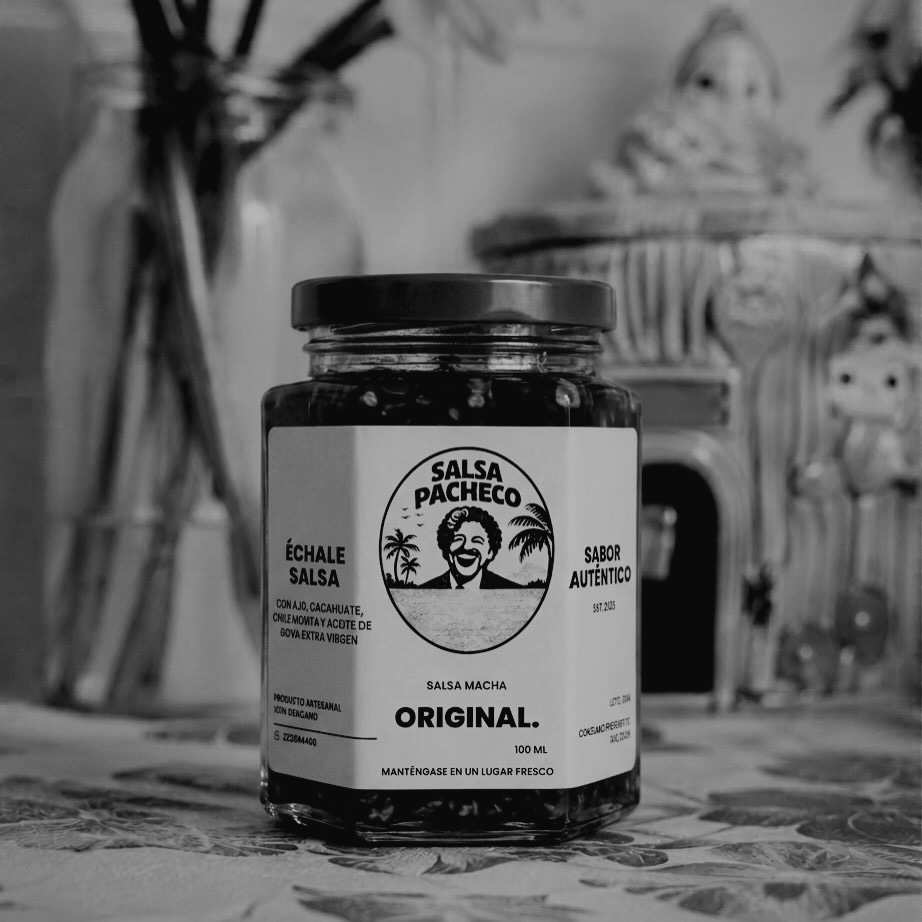
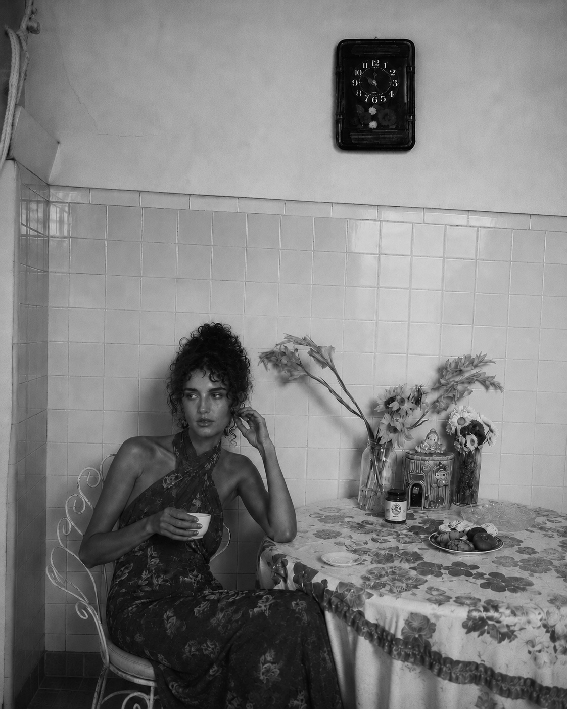
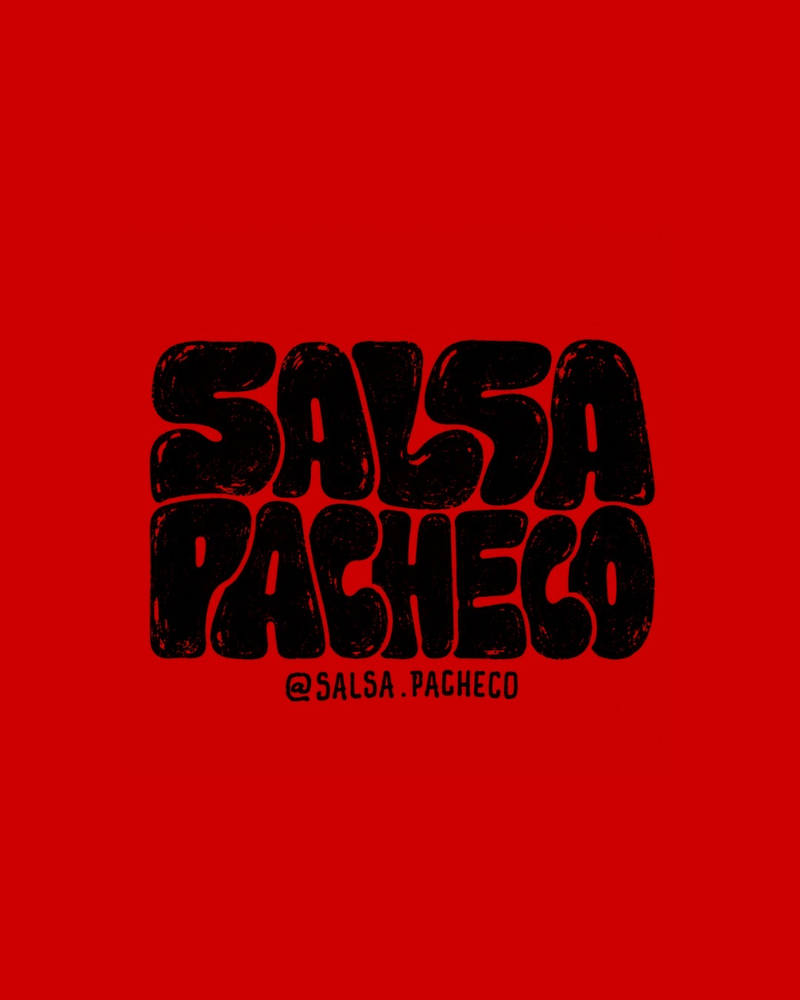
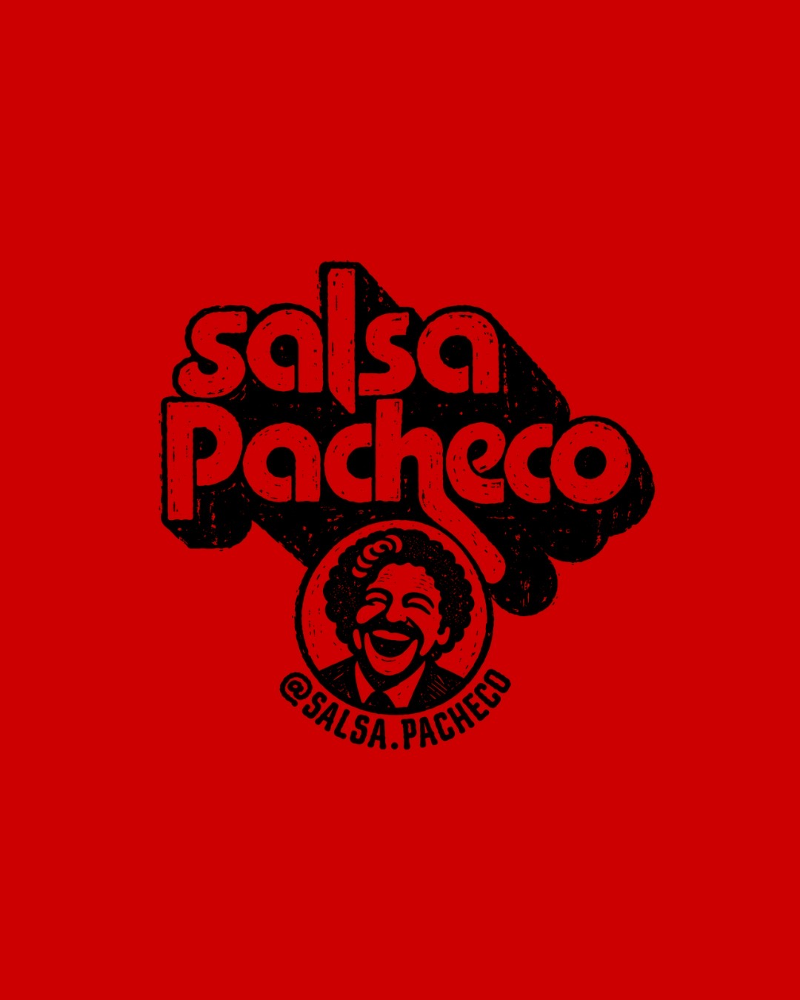
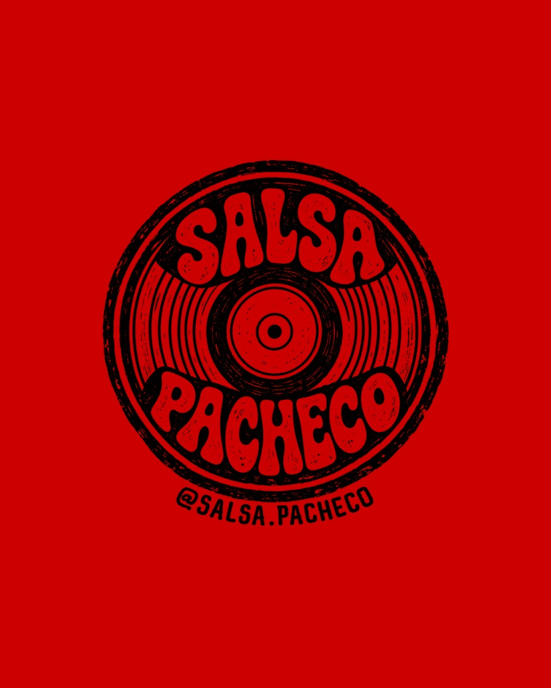
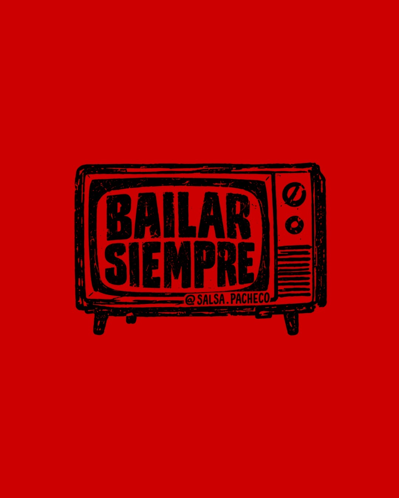
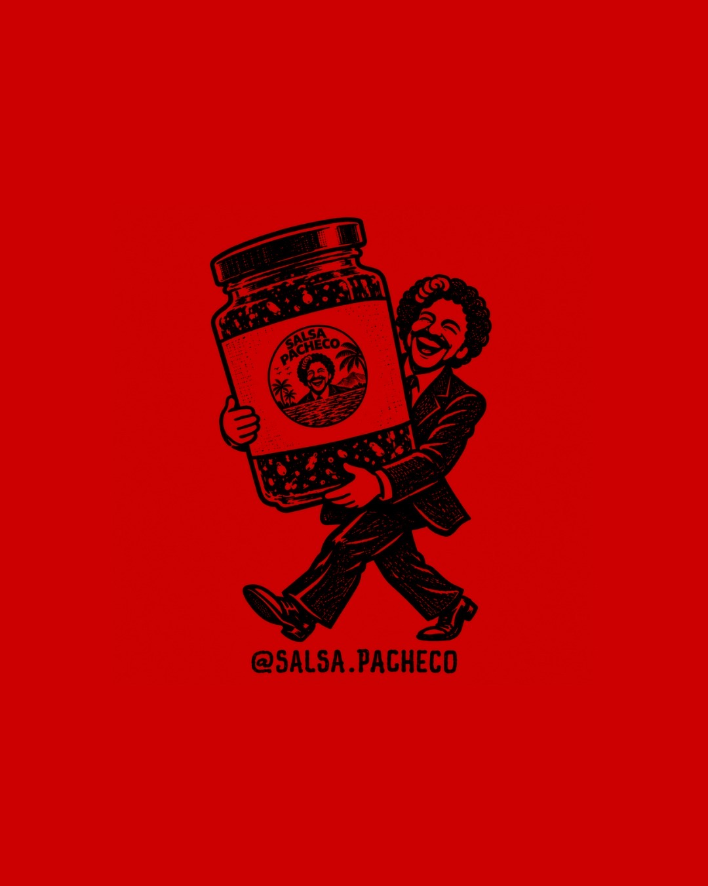
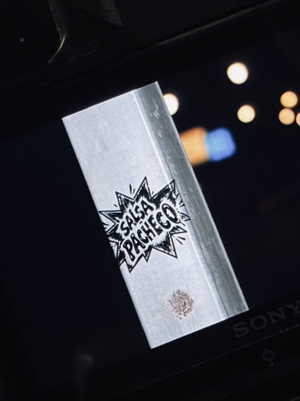

SALSAPACHECO.
La salsa que
(te hace bailar).
SABOR / RITMO / CULTURA /
Una salsa picante creada en Mexico, con influencia del Caribe.

PACHECO
SIEMPRE
en tu mesa

Salsas Pacheco es una marca independiente de salsa macha gourmet elaborada con aceite de oliva, nacida en México. Un proyecto que conecta cocina, diseño, música y encuentros alrededor de una mesa y silla(s).
La marca tiene dos recetas: Clásica y Mix Semillas. Su identidad mira hacia la cultura salsera, el Caribe y la energía del baile: no como adorno, sino como una manera de contar qué queremos que se sienta al abrir un frasco y probar nuestra salsa.
HECHO EN MÉXICO / DESARROLLO DE PRODUCTO / IDENTIDAD / COMUNIDAD
DE OLIVA.
MIX SEMILLAS.
RITMO.
¿POR QUÉ
(Pacheco)?
El nombre Pacheco lleva música adentro. Estas seis láminas recorren el ritmo, la historia y las personas que inspiraron nuestra identidad.

ARTE
QUE
(se pega).
Antes de estar en la calle, una imagen empieza como una idea. Seis piezas del primer universo gráfico de Pacheco, con su fondo rojo, su tinta negra y su textura de linograbado.






DEL PAPEL
(a la calle).
El universo gráfico de Pacheco también existe fuera de la pantalla.
@SALSA.PACHECO / 001SALSA
PACHECO
(en vivo).
Un pequeño registro en video de la marca fuera del diseño. Lo que me interesa de proyectos como este es que las ideas no se quedan en una pantalla: terminan encontrándose con otras personas.